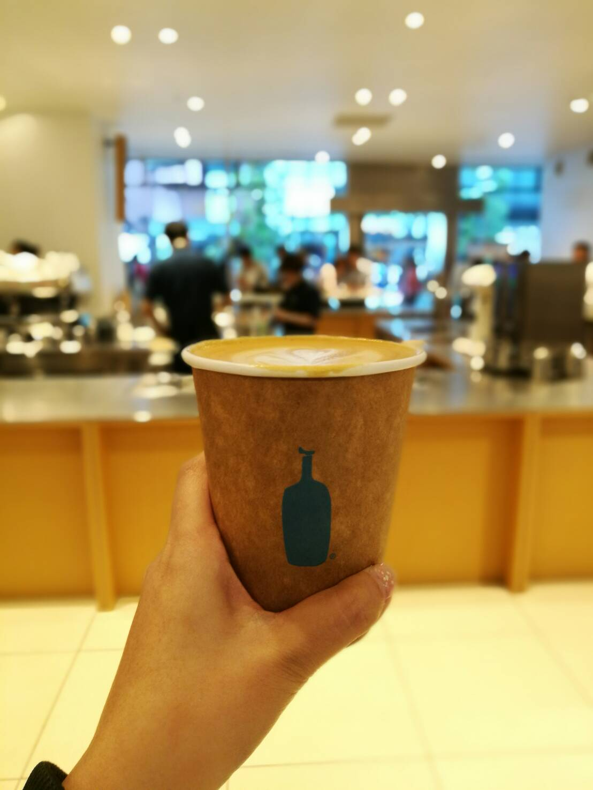
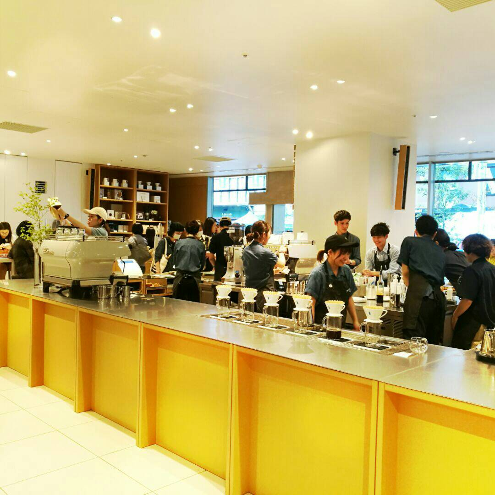
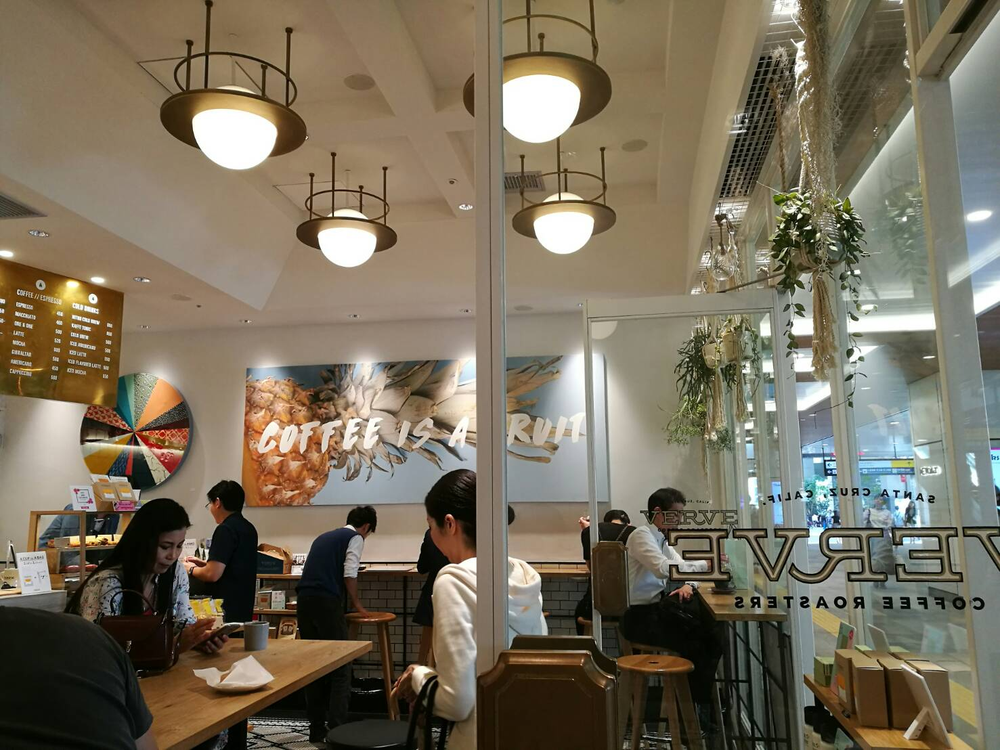
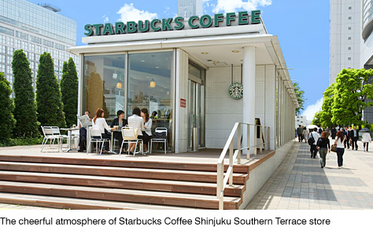

I really enjoy coffee, like good coffee. Coffee is like the way in which my brain kicks into action and tells itself “ok, let’s start the day!” On my recent trip to Tokyo, I tried to make it a point to visit different coffee places around ma (temporary) hood- Shinjuku.
I really enjoy blue bottle coffee. I think we went back three times. haha (so much for trying new things). This is walking distance from the Shinjuku station. The coffee is fresh and tastes great even without sugar. I ordered a flat white. A tip though, the coffee place does not really have much seating. On all 3 occasions, I did a grab and go!
My flat white!
The interior of Blue Bottle Coffee
Directly, like directly outside the station is Verve Coffee. On first impression it seems like an Indie joint. The interior of the store is beautiful! I ordered a flat white as well. The coffee here is good but I personally felt Blue Bottle was better. The coffee was a lot more fragrant! I guess the best litmus test for a coffee joint is whether you find a need to return, in this case, I didn’t feel there was a need to pay it a second visit.
The interior of Blue Bottle Coffee
Directly, like directly outside the station is Verve Coffee. On first impression it seems like an Indie joint. The interior of the store is beautiful! I ordered a flat white as well. The coffee here is good but I personally felt Blue Bottle was better. The coffee was a lot more fragrant! I guess the best litmus test for a coffee joint is whether you find a need to return, in this case, I didn’t feel there was a need to pay it a second visit.
Picture credits to Odakyu Japan. Link to image here.
Shinjuku is a wonderful place to stay. I will do more another post of the hotel soon 🙂
Adios for now!